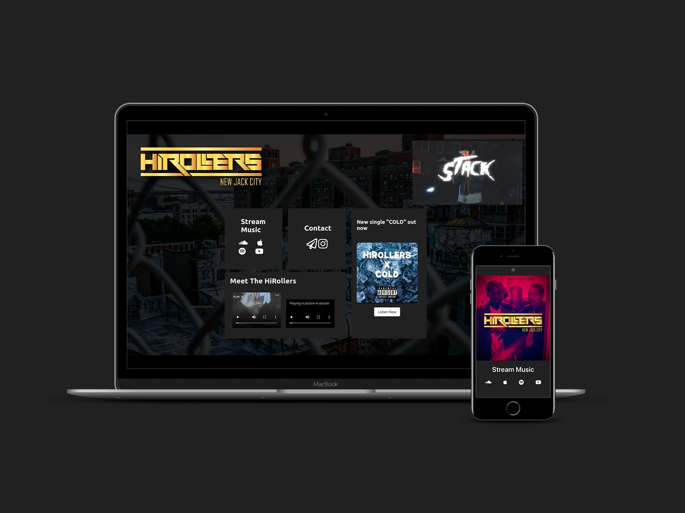
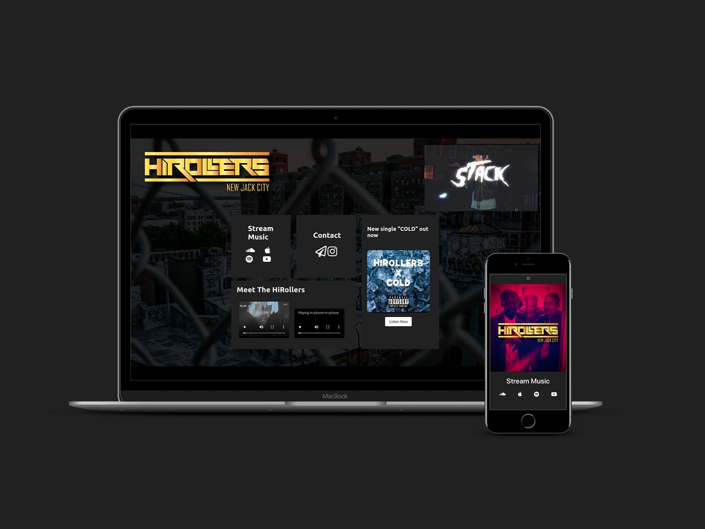

Artist Page | HiRollers
Objective: To create a website where visitors are able to get an understanding of who the artist(s) is/are, where to find their music and how to contact them.
Artist Page | HiRollers
Objective: To create a website where visitors are able to get an understanding of who the artist(s) is/are, where to find their music and how to contact them.
UI/UX | Mobile

Themes: HipHop/Rap/Agressive
To capture this I used 3 colors, a deep grey, white, and a call to action blue. The logo and cover image was courtesy of the clients, they happen to contrast well with each other and add to the overall seriousness of the artists.

In the navigation menu I wanted visitors to have direct access to all of their social and music platforms and contact in one place without having to look too hard. Wandering eyes can lead to less user engagement so this was absolutely necessary to focus on.

Upon scrolling the first page you will find latest and soon to be released music with call to action buttons that intice to user to listen directly. (Client wanted to leave out music video for later promotion)

The "Hirollers" link in the menu takes you to a page where you can directly see who the Hirollers are, 70% of the internet is on a mobile device, the demographic this rap group appeals to most likely has instagram, so I created a card that resembled an instagram post that links to their personal accounts with videos of the artists rapping.

Again I wanted visitors to have access to their music at any moment, so with a button with the call to action blue on the top right corner of the screen, upon pressing it opens a modal with all of the links to their streaming platforms.